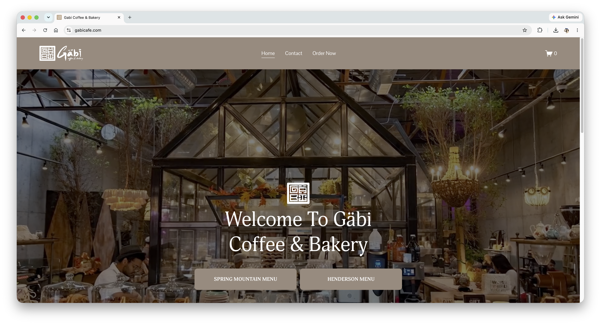
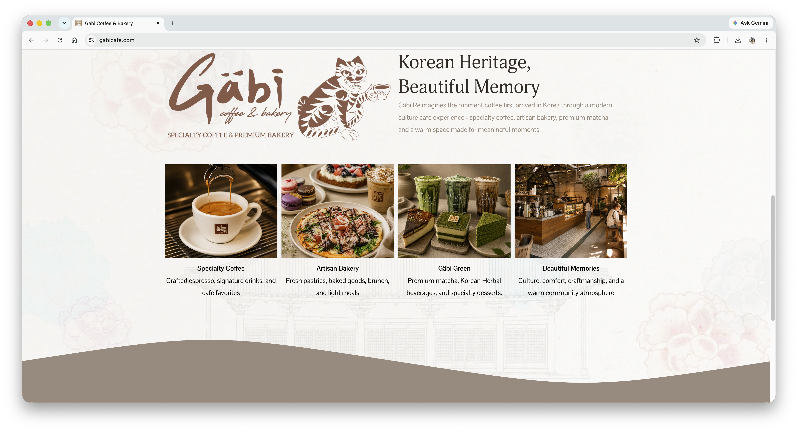
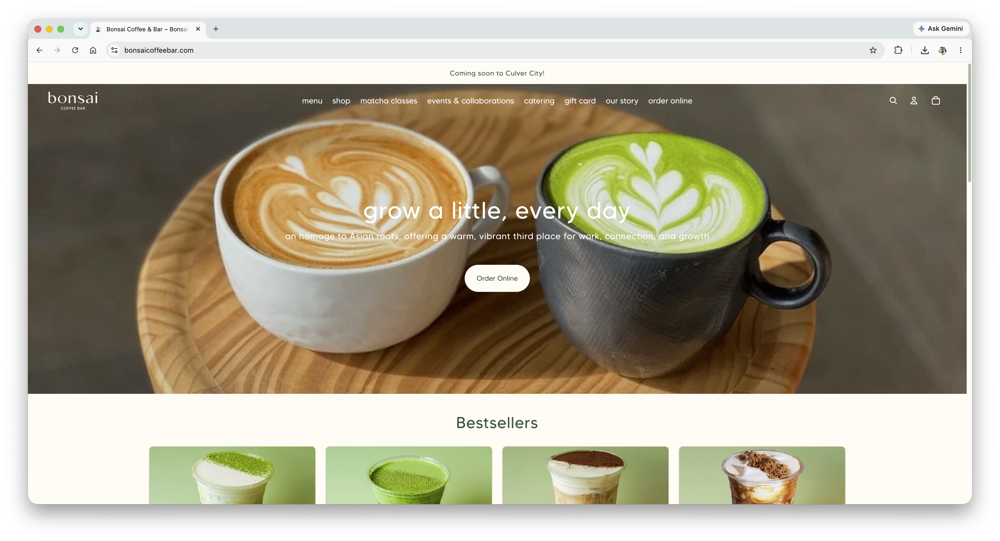
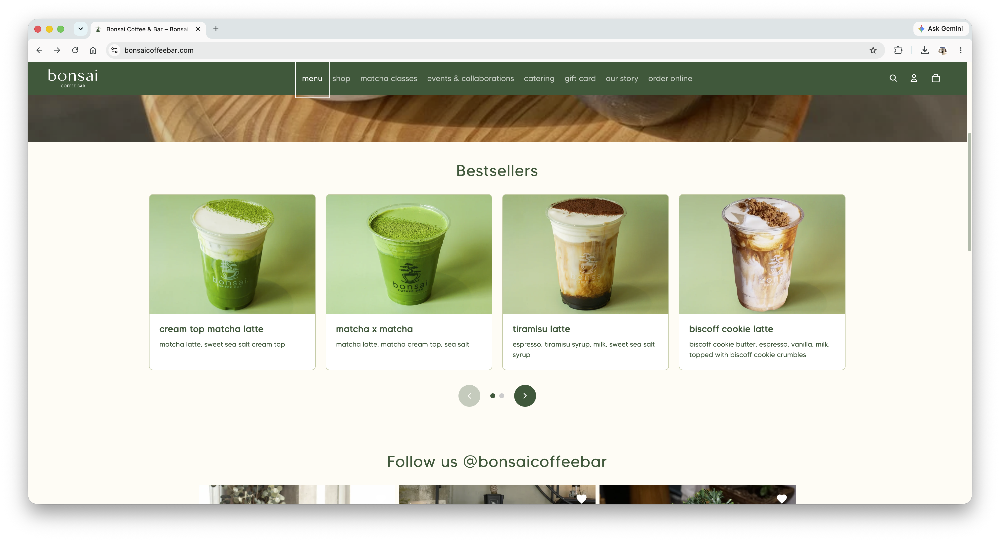
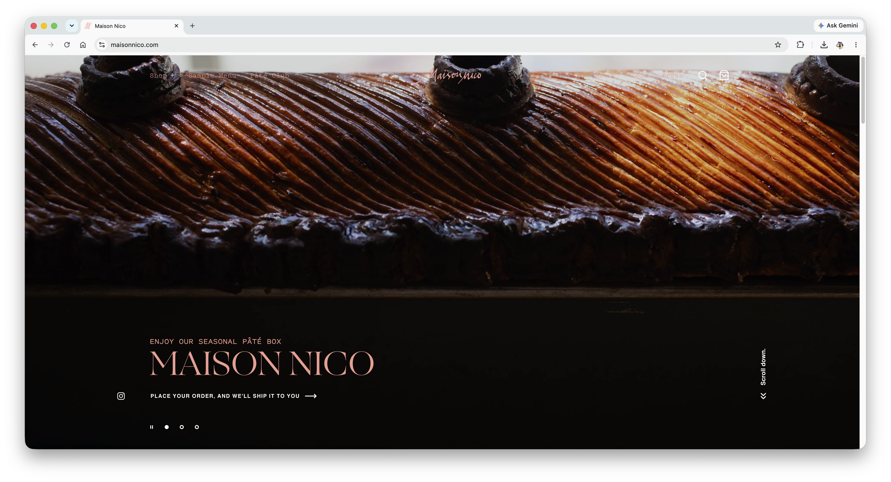
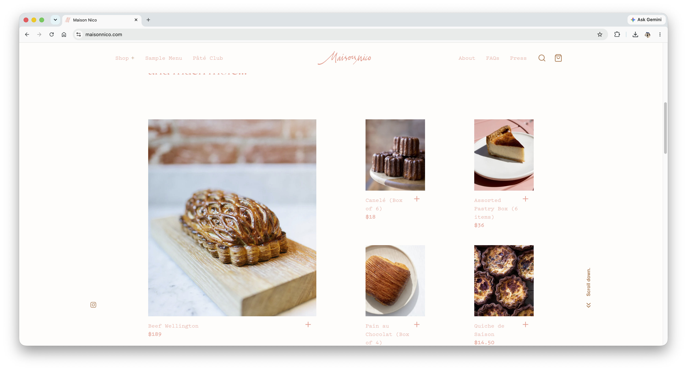

Crumb&Co.
Crumb&Co. is a cafe and bakery located in San Luis Obispo, California. It specializes in French-inspired pastries, breads, and desserts, all freshly baked every morning. Crumb&Co. also offers a wide variety of cafe drinks such as coffee, iced lattes, and ceremonial grade matcha. The Crumb&Co. space is designed to be quiet and cozy, perfect for studying or reading while enjoying a sweet treat.
The target audience of Crumb&Co. includes families, adults of any age, and highschool or college students. Crumb&Co. might be especially appealing to Cal Poly students who need a quiet space to study.
The audience's primary task is to see the Crumb&Co. menu, where the cafe is located, and what times they are open. The website will also showcase current and upcoming events taking place at Crumb&Co. such as deals, pop-ups, and freebies. Customers will likely be interested in the details behind these events and may even utilize contact information listed on the website.






Welcome to Crumb&Co., a cozy cafe and bakery located San Luis Obispo! At Crumb&Co., our goal is to bring to you a relaxing and quiet space where you can unwind or get productive with a freshly baked treat. Our menu consists of French pastries and bread, as well as carefully crafted teas and coffee.
[A display of the Crumb&Co. store interior + customers enjoying pastries and coffee]
Crumb&Co. came from the idea of slowing down and enjoying the simplicity of a cup of coffee. Our goal was to create an environment that feels warm and familiar, fostering a space for rest and connection. What started off as an idea for a cafe quickly expanded to a bakery. Heavily inspired by French patisseries, we worked with bakers to design a menu full of delicately crafted pastries and bread. At Crumb&Co., we value the quality and authenticity of our goods, which is why everything we sell is freshly baked every morning.
[Image of coffee being made and pastries being baked]
[Detailed photographs of matcha lattes, cake slice, and croissant]
Crumb&Co. is located at 1234 Cafe Street in San Luis Obispo, California. You can call us at 123-456-7890 or email us at contact@crumbnco.com. We are open weekdays from 9:00 AM to 8:00 PM. We are open weekends from 11:00 AM to 7:00 PM. Please contact us during our hours of operation with any questions and/or concerns.
[Image of the Crumb&Co. storefront]